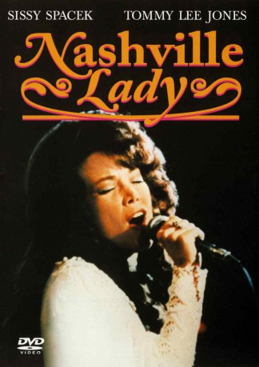

#6225 Nashville Lady
Alternativ: Coal Miner's Daughter
Auszeichnungen: 1 Oscars gewonnen für 6 Oscars nominiert 2 GoldenGlobes gewonnen
 
 IMDB-Wertung: 7.5 / 10
IMDB-Wertung: 7.5 / 10  Metascore: 0
Metascore: 0 
Mit diesem Drama über das Leben der “Queen of Country Music” liefert Sissy Spacek eine unvergessliche Leistung in ihrer Rolle als Loretta Lynn. Tommy Lee Jones spielt Lorettas ehrgeizeigen Ehemann Mooney, der Loretta als Teenager heiratet und sie aus ihrer Heimat in den Wäldern der Appalachen mitnimmt. Obwohl sie mit achtzehn bereits Mutter von vier Kindern ist, findet Loretta immer noch genügend Zeit, um zu singen und eigene Songs zu schreiben. Als sie sich dazu überreden lässt, selbst eine Schallplatte aufzunehmen und nach Nashville zu gehen, beginnt ihre steile Karriere mit dem ersten Auftritt in der Grand Ole Opry.
Jahr: 1980
Dauer: 124 Minuten
FSK: 12
Land: USA Studio: Universal PicturesTonspuren: DD2.0 - ,
Untertitel: Englisch,
Auflösung: 720p (1280x696) Größe: 5765 MB
Genre: Drama, Musik, Biographie, Musical
Regisseur:  Michael Apted
Michael Apted
Drehbuch: John Niven
Soundtrack:
Darsteller:
 Sissy Spacek als Loretta Lynn
Sissy Spacek als Loretta Lynn Tommy Lee Jones als Doolittle Lynn
Tommy Lee Jones als Doolittle Lynn Levon Helm als Ted Webb
Levon Helm als Ted Webb William Sanderson als Lee Dollarhide
William Sanderson als Lee Dollarhide Beverly D'Angelo als Patsy Cline
Beverly D'Angelo als Patsy Cline- Ernest Tubb als Ernest Tubb
- David Wm Gray als Doc Turner
- Roy Acuff als Roy Acuff , uncredited
- Minnie Pearl als Minnie Pearl , uncredited
- Phyllis Boyens-Liptak als 'Clary' Webb
- Bill Anderson Jr. als Webb Child
- Foister Dickerson als Webb Child
- Malla McCown als Webb Child
- Pamela McCown als Webb Child
- Kevin Salvilla als Webb Child
- Sissy Lucas als Betty Sue Lynn
- Pat Patterson als Jack Benny Lynn
- Brian Warf als Ernest Ray Lynn
- Elizabeth Watson als Cissy Lynn
- Bob Elkins als Bobby Day
 Bob Hannah als Charlie Dick
Bob Hannah als Charlie Dick- Jennifer Beasley als Patsy Lynn
- Jessica Beasley als Peggy Lynn
- Susan Kingsley als Girl at Fairgrounds
- Michael Baish als Storekeeper
- Royce Clark als Hugh Cherry
- Gary Parker als Radio Station Manager
- Billy Strange als Speedy West
- Bruce Newman als Opry Stage Manager
- Grant Turner als Opry Announcer
- Frank Mitchell als Washington Neighbor
- Merle Kilgore als Cowboy at Tootsie's
- Jackie Lynn Wright als Redhead at Tootsie's
- Rhonda Rhoton als Lizzie
- Vernon Oxford als Preacher
- Ron Hensley als John Penn
- Doug Bledsoe als Cowboy at Grange Hall
- Aubrey Wells als Red Lynn
- Russell Varner als Bidder at Pie Auction
- Tommie O'Donnell als Teacher at Pie Auction
- Lou Headley als Teacher at Pie Auction
- Ruby Caudill als Teacher at Pie Auction
- Charles Kahlenberg als Business Manager
- Alice McGeachy als Woman with Doll
- Ken Riley als Road Manager
- Jim Webb als Bus Driver
- Dave Thornhill als The Coal Miner's Band
- Don Ballinger als The Coal Miner's Band
- Zeke Dawson als The Coal Miner's Band
- Gene Dunlap als The Coal Miner's Band
Datei: X:\1980\Nashville Lady (1980, FSK12, 1280x696).mkv seit 17.05.2017
Festplatte: HD 1980-1986
 Es gibt insgesamt 33 Filme in der Gruppe '1980'
Es gibt insgesamt 33 Filme in der Gruppe '1980'